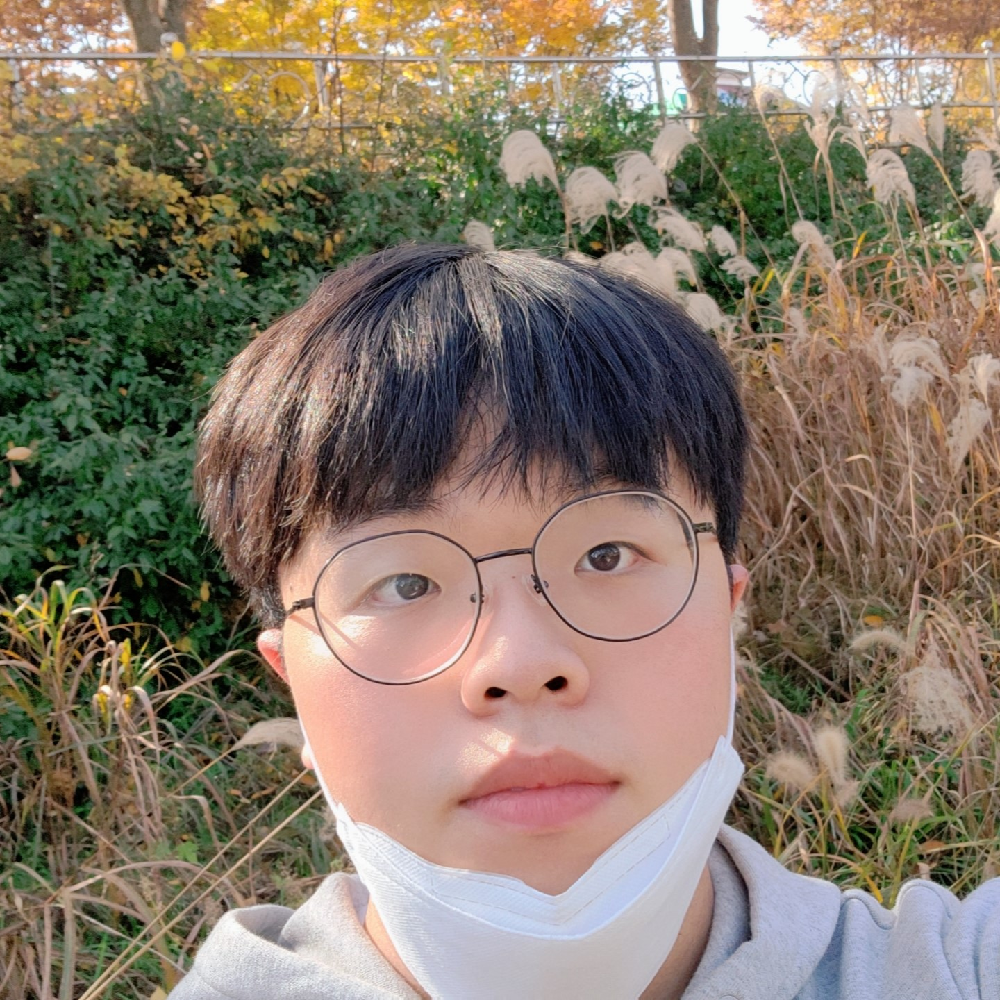
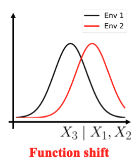
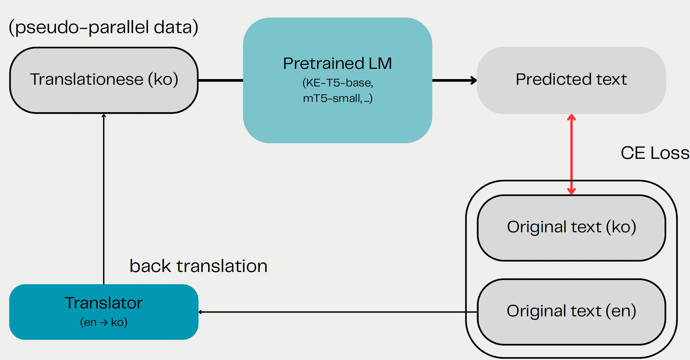
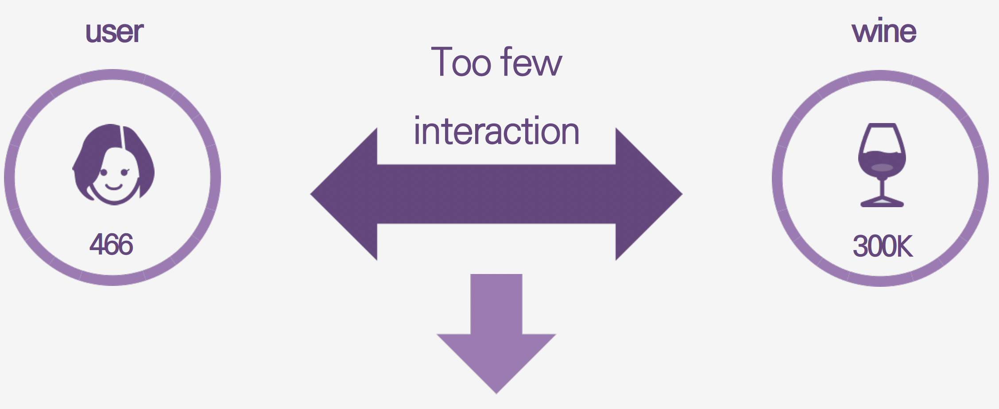
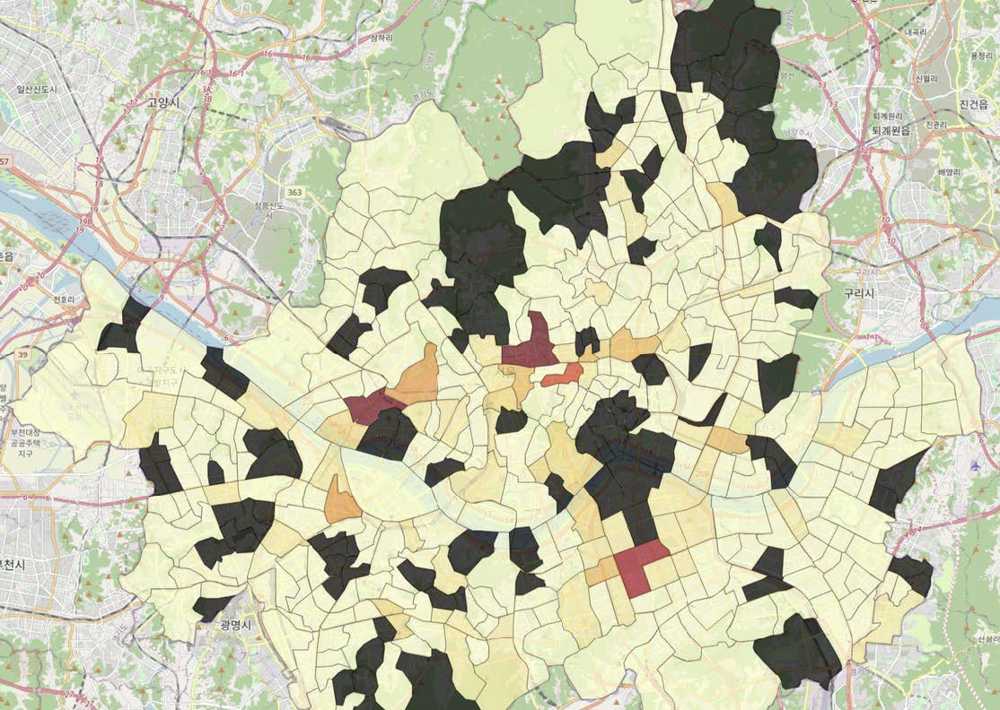
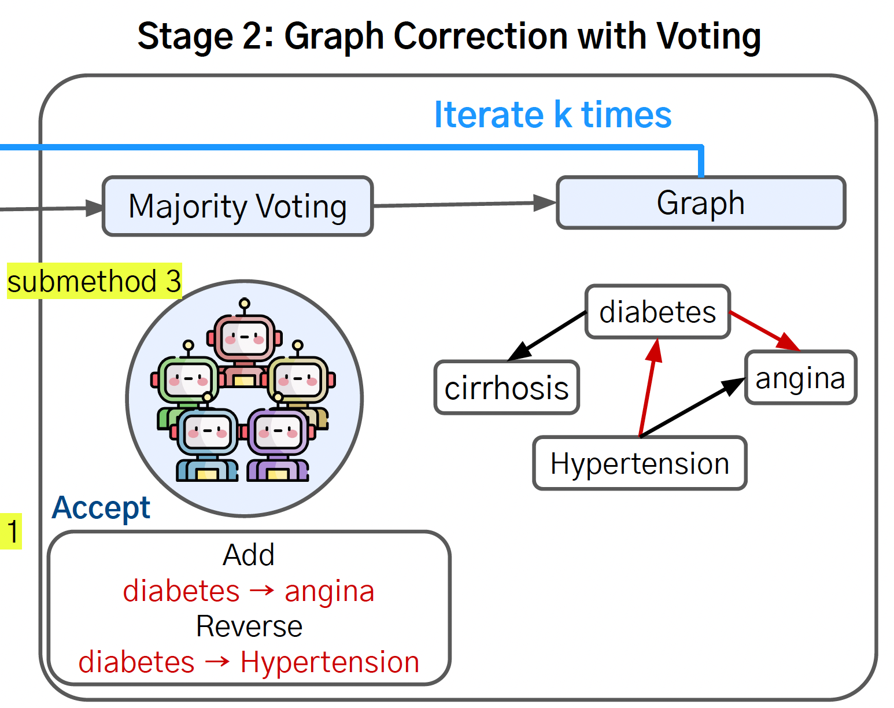

|
-ˋˏ ｡ﾟ Mingyu Kim ﾟ｡ ˎˊ- Hi, everyone! I'm an integrated course graduate student at Yonsei University in Seoul, Korea. I'm majoring in Statistics and Data Science, working as a researcher at MLAI advised by Prof. Kyungwoo Song. My research interests are mainly on robustness of Large Language Models (LLMs) and Causal Machine Learning. Moreover, I also have interests in statistical and theoretical analysis of machine learning methods. Email / CV / Github / LinkedIn Always open to any research opportunities for related topics! |
 |
{kind=link}
News[Sep. 2025] I started working as a statistical consultant at the Yonsei Institute of Data Science. [Feb. 2025] I graduated as the top student (summa cum laude) in my department! [Oct. 2024] I was qualified for the BS/MS integrated program in the department of statistics and data science! |
Education
M.S./Ph.D. in the Department of Statistics and Data Science, Yonsei University, Seoul, Korea
B.S. in the Department of Applied Statistics, Yonsei University, Seoul, Korea |
Research Interests
1. Statistical Inference on LLMs Despite the recent success of Large Language Models (LLMs) in various tasks, they still struggle with causal reasoning and understanding the underlying mechanisms of the real world. My research interest is on enhancing the causal reasoning capabilities of these models. |
Publications & Preprints |
|  |
Dissecting Causal Mechanism Shifts via FANS: Function and Noise Separation using Flows
Gyeongdeok Seo, Jaeyoon Shim, Mingyu Kim, Hoyoon Byun, Yonghan Jung, Kyungwoo Song Preprints, May. 2025 This paper proposes FANS (Function And Noise Separation), a unified framework for Causal Mechanism Shifts (CMS) by disentangling changes in causal functions from changes in noise. Checking the independence between estimated noise and parent variables in new environments, it determines whether shifts are function-driven or noise-driven, while handling complex and diverse noise changes (e.g., higher-order moment shifts). Under-review. Paper and codes will be released soon. |
Projects |
|  |
Mitigation of English-Korean Translationese using Backtranslated Data
Hyungu Kang, Mingyu Kim, Kyeongwon Park, Hyunbo Sim, Yumin Cheong YAICON 6th 1st Prize, 2025 Spring Code This project aims to detect and reduce translationese in English–Korean translations. Building on findings that translationese inflates performance metrics, we propose a fine-tuned encoder–decoder model using semi-synthetic dataset. The goal is to develop a style transfer system that rewrites translationese Korean into more natural Korean while preserving meaning. |
|  |
Right Wine for You: Finding the Best RecSys Model for Data Sparsity Improvement
Eungyeol Han, Mingyu Kim, Sunki Kim, Sehyun Park, Jueun Jung DSL Modeling Project, 2025 Spring Code / Video This project aimed to improve wine recommendations using graph-based recommender systems on a highly sparse dataset from VIVINO. We benchmarked several models for handling sparsity including LightGCN, KGAT, MKR, MCCF, and GFormer. Despite limited interaction data and knowledge graph complexity, we successfully identified robust solutions for sparse data cases. |

|
MLM Fine-Tuning in MBTI Task
Junseong Lee, Mingyu Kim, Jaeyeong Seong, Yeongjoo Lee, Hyeonjun Lee YAICON 5th, 2024 Winter Code For MBTI personality classification, it proposes multi-stage transfer learning approach with KoELECTRA and GPT-4o. Pipeline includes 3 phases: task-specific fine-tuning with official MBTI texts, masked language modeling with GPT-guided masking, and classification. By integrating domain knowledge and contextual embeddings, it showed classification improvement. |

|
Missing Children Aging Prediction via FADING & GOAE
Hyeongene Kim, Mingyu Kim, Jungsoo Yoon, Kunwoo Kim DSL Modeling Project, 2024 Fall Code / Video Based on FADING, the diffusion based model for aging and GOAE, the 3D rendering model with only one picture, we made two-step face aging architecture especially for Korean missing children. The addressed pre-process techniques such as upscaling and labeling and the results from this project are expected to contribute to related research for face aging. |

|
Face Mosaic using Mask R-CNN
Dongyoon Kim, Minwoo Park, Sooran Kim, Mingyu Kim YAI Toy Project, 2024 Summer Code Using the Mask R-CNN architecture for face detection, we made the model that applies mosaic effect for all detected faces Fine tuned by the WIDER FACE dataset, it performed well both for image and video. Although it was conducted as simple project for reviewing, this project helped me to broaden the technique related to AI research. |
|  |
Foundation Proposal for Midnight Bus Route in Seoul
Hyuna Ko, Mingyu Kim, Junsik Choo, Eunhee Kim DSL EDA Project, 2024 Summer Code / Video Solving the problem of not being able to distribute the amount of transportation compared to the high demand for late-night buses, project presented a new route by analyzing the actual amount of movement and bus boarding during the night time. It is quite meaningful in terms of suggesting a new plan for a circular route rather than a simple end-to-end route. |

|
Solving Trolley Problem via Reinforcement Learning
Beomjun Shin, Chaewon Yoo, Mingyu Kim, Seungjoo Yoo STA3145 (Reinforcement Learing) Team Project, 2024 Spring To make the agent morality in RL, previous research aims to implement the conflict of ethics in terms of voting system. In this project, we aimed to implement the moral determinations based on Bayesian RL concept with multi-agent. Also, we implement the situation of trolley problem where the agent has to choose trade-off option using the safe gymnasium enviorment. |
|
Derivation of Dangerous Areas for Children Car Accident in Osan City
Hyemi Koo, Yikyung Yoon, Mingyu Kim, Junho Baek, Yoonyi Lee National Urban Data Analysis Challenges by COMPAS and Osan City, Jan. 2021 Based on the fact that the child protection zone in Osan City is insufficient to the number of traffic accidents occured, we analyzed the actual area status. For the analysis, spatial analysis APIs and multilinear regression model with diagnostic methods were used to increase their accuracy and intuition. Codes are not unavailable due to the data privacy. |
Talks |
|  |
Causal Machine Learning in Medical AI
Mingyu Kim Data Science with Alumni Seminar, Jul. 2025 Presented a seminar on Causal Machine Learning in Medical AI, covering causal inference, generative models, and LLM-based causal graph discovery. |

|
Dive into Diffusion Model: DDPM to DDPO
Mingyu Kim YAI Session Speech (Generative Model Team), Sep. 2024 Lightly presented the concept and flow of various methodologies derived from DDPM, and introduced the core of DDPO which combines generative model and reinforcement learning methodology. |
Teaching
Deep Learning (STA3140) - Professor: Jaewoo Park
SW Programming (YCS1002) - Professor: Jaekyung Kim |
Awards and Scholarships
Yonsei Academic Track Scholorship - Spring 2025
Guwon Scholorship - Spring 2024 ~ Spring 2025, Spring 2022
Academic Awards at Yonsei Univ. - Multiple Semesters |
Extracurricular Activities
Yonsei Artificial Intelligence For Detailed information, see here.
Yonsei Data Science Lab For Detailed information, see here. |
|
Website templete adapted from Jon Barron. |